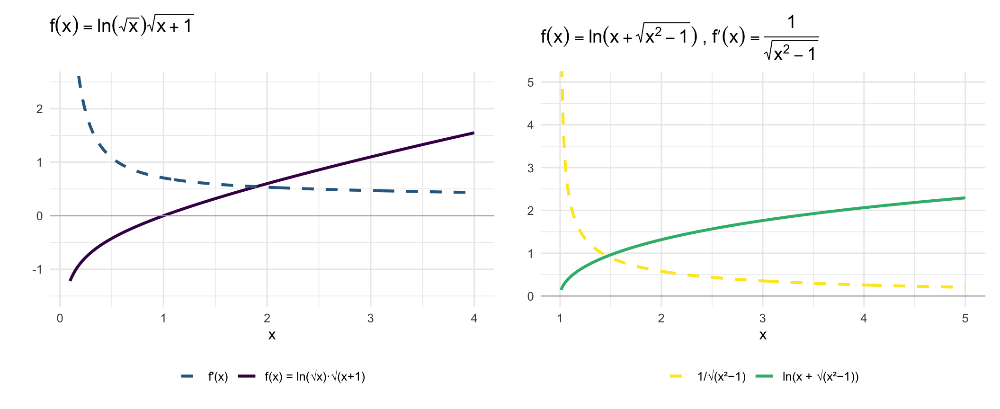

library(ggplot2)
library(patchwork)
base_t <- theme_minimal(base_size = 12)
# Exercício 1: f(x) = ln(sqrt(x)) * sqrt(x+1)
x1 <- seq(0.05, 4, length.out = 500)
df1 <- data.frame(
x = x1,
f = log(sqrt(x1)) * sqrt(x1 + 1),
fp = (x1 + 1 + (x1/2)*log(x1)) / (2*x1*sqrt(x1+1))
)
df1 <- subset(df1, abs(fp) < 5)
p1 <- ggplot(df1, aes(x)) +
geom_line(aes(y = f, color = "f(x) = ln(√x)·√(x+1)"), linewidth = 1.1) +
geom_line(aes(y = fp, color = "f'(x)"), linewidth = 1.1, linetype = "dashed") +
geom_hline(yintercept = 0, color = "gray70", linewidth = 0.4) +
coord_cartesian(ylim = c(-1.5, 2.5)) +
scale_color_manual(values = c("f(x) = ln(√x)·√(x+1)" = "#440154",
"f'(x)" = "#31688e")) +
labs(title = expression(f(x) == ln(sqrt(x)) * sqrt(x+1)),
x = "x", y = "", color = NULL) +
base_t + theme(legend.position = "bottom")
# Exercício 4: f(x) = ln(x + sqrt(x^2 - 1)), a=1
x2 <- seq(1.01, 5, length.out = 500)
df2 <- data.frame(
x = x2,
f = log(x2 + sqrt(x2^2 - 1)),
fp = 1/sqrt(x2^2 - 1)
)
df2 <- subset(df2, fp < 10)
p2 <- ggplot(df2, aes(x)) +
geom_line(aes(y = f, color = "ln(x + √(x²−1))"), linewidth = 1.1) +
geom_line(aes(y = fp, color = "1/√(x²−1)"), linewidth = 1.1, linetype = "dashed") +
geom_hline(yintercept = 0, color = "gray70", linewidth = 0.4) +
coord_cartesian(ylim = c(0, 5)) +
scale_color_manual(values = c("ln(x + √(x²−1))" = "#35b779",
"1/√(x²−1)" = "#FDE725")) +
labs(title = expression(f(x) == ln(x + sqrt(x^2-1)) ~ "," ~ f*minute(x) == frac(1, sqrt(x^2-1))),
x = "x", y = "", color = NULL) +
base_t + theme(legend.position = "bottom")
p1 + p2